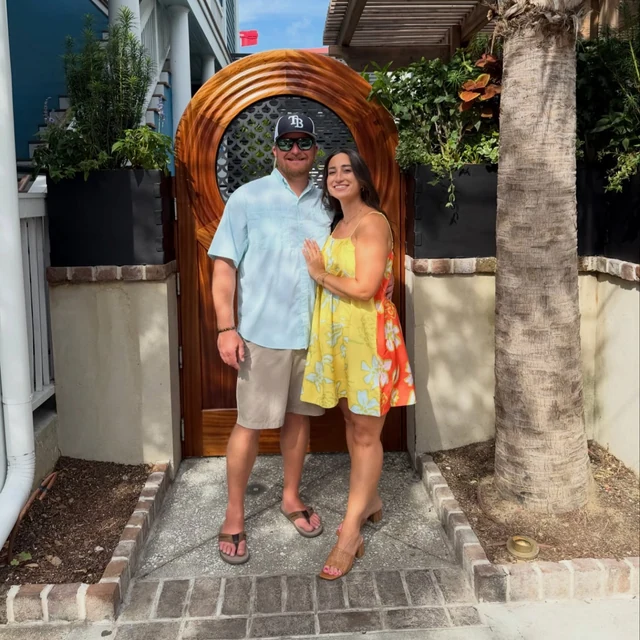
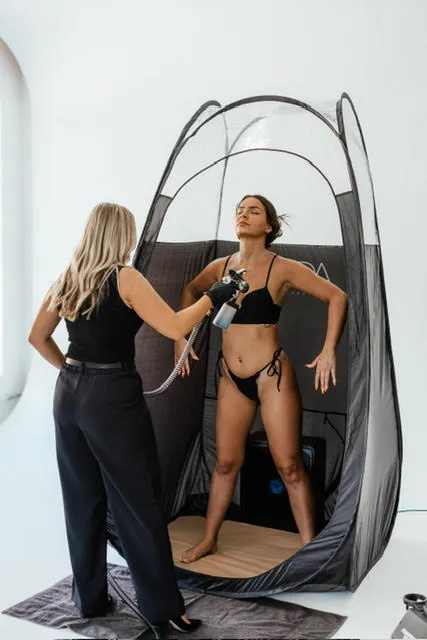
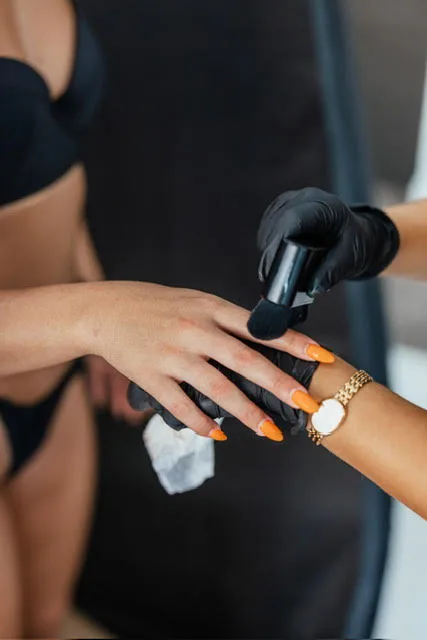
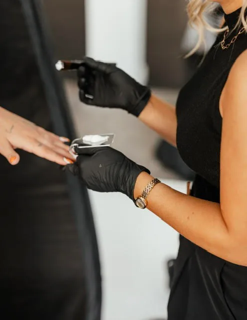
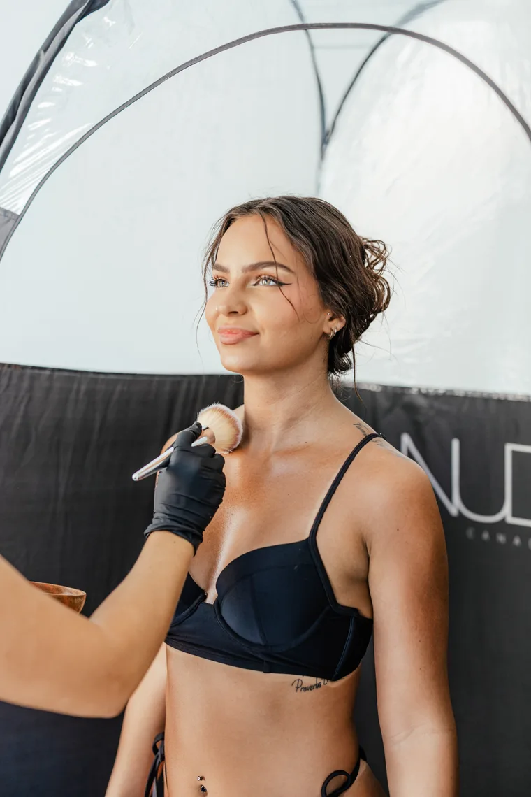

Vacation glow
St. Petersburg Mobile Spray Tanning
Coastal Bronze Spray Tanning brings private, custom airbrush tanning to St. Petersburg homes, hotels, Airbnbs, bridal suites, businesses, and event spaces.
Book a mobile spray tan in St. Petersburg for weddings, creative shoots, downtown events, beach weekends, or any moment when you want UV-free color that looks natural.
Add your full appointment address in Square notes so Mackenzie can confirm travel details from the Holiday studio.
Local Mobile Spray Tan
St. Petersburg clients often book mobile spray tans for downtown events, creative shoots, wedding weekends, beach plans, and bachelorette trips. Coastal Bronze serves select addresses near Downtown St. Petersburg, Old Northeast, Kenwood, Tyrone, Snell Isle, 4th Street North, Central Avenue, and nearby beach routes when scheduling allows. Mackenzie brings a private mobile setup and creates a custom bronze that photographs well without looking artificial.
Service area: St. Petersburg, FL
County: Pinellas County
ZIP codes: 33701, 33702, 33703, 33704, 33705, 33706, 33707, 33708, 33709, 33710, 33711, 33712, 33713, 33714, 33715, 33716
Appointment type: Mobile spray tan at your home, hotel, business, Airbnb, bridal suite, or event space
Starting price: $100+ before any travel fee
Popular for: weddings, creative shoots, downtown events, beach weekends, bachelorette trips
Mobile appointments may be convenient near Downtown St. Petersburg, Old Northeast, Kenwood, Tyrone, Snell Isle, 4th Street North, Central Avenue. Availability depends on the appointment address, route timing, and the day's schedule.
Clients often schedule spray tans before plans near The Vinoy area, St. Pete Pier, Sunken Gardens, Central Avenue District. These references help explain the service area and do not imply a partnership or venue affiliation.
City-Specific Planning
Coastal Bronze keeps the appointment private and efficient while tailoring the formula to how you will actually wear the tan in St. Petersburg. That might mean a soft vacation glow, a photo-ready bridal bronze, a subtle professional-event color, or a deeper result for a night out. Mackenzie brings the tent, professional equipment, NUDA solution, disposables, barrier cream, hair net, finishing powder, and aftercare guidance so your space stays clean and your results feel intentional.
Homes, hotels, businesses, Airbnbs, bridal suites, and event spaces work well when there is privacy, good lighting, and enough room for the mobile tent.
For St. Pete photo sessions or downtown events, book your tan one to two days ahead so the color is fully settled and camera-ready.
Add your full St. Petersburg appointment address in Square notes so travel time, parking, and any fee can be confirmed before your appointment.

Why Coastal Bronze
Mackenzie focuses on comfortable appointments, skin-conscious NUDA solutions, and color that looks like you, only bronzed.
The mobile appointment is designed to feel calm, polished, and efficient, whether you are at home, in a hotel, or getting ready with a bridal party.
Your tan is mixed and timed around your undertone, event date, outfit plans, and preferred glow level.
You get guidance before and after your appointment so your spray tan develops evenly and fades as smoothly as possible.



St. Petersburg ZIP Codes
Coastal Bronze mobile appointments may be available in and around these St. Petersburg ZIP codes. Final availability depends on schedule, travel distance, and the appointment address entered in Square.
33701, 33702, 33703, 33704, 33705, 33706, 33707, 33708, 33709, 33710, 33711, 33712, 33713, 33714, 33715, 33716
Downtown St. Petersburg, Old Northeast, Kenwood, Tyrone, Snell Isle, 4th Street North, Central Avenue
Homes, hotels, businesses, Airbnbs, bridal suites, and event spaces work well when there is privacy, good lighting, and room for the mobile tent.
What to Expect
Mackenzie brings the Coastal Bronze setup to you so your appointment feels easy, private, and polished from start to finish.
I show up at your home, business, hotel, Airbnb, bridal suite, or event space at the confirmed appointment time.
I bring the mobile spray tan tent, professional equipment, NUDA solution, disposables, barrier cream, hair net, and finishing powder.
Your spray tan is tailored to your skin tone, undertone, event timeline, rinse window, and desired depth of bronze.
You get clear timing and aftercare notes so your color develops evenly and lasts as smoothly as possible.
I pack up the tent and equipment carefully, keep overspray contained, and leave your place as clean as I found it.
You can relax at home after your appointment in loose, dark clothing while your custom tan develops.
St. Petersburg FAQs
High-intent answers for clients comparing mobile spray tanning options in St. Petersburg and nearby communities.
Yes. Coastal Bronze Spray Tanning offers mobile spray tans in St. Petersburg, FL by appointment, with availability based on schedule and travel distance from the Holiday studio.
Mobile spray tans currently start at $100+. A travel fee may apply based on the appointment address, mileage from Holiday, FL 34691, and any group setup needs.
Yes. Mackenzie can bring the mobile setup to homes, hotels, businesses, bridal suites, Airbnbs, and event spaces near Downtown St. Petersburg, Old Northeast, Kenwood, Tyrone, Snell Isle, 4th Street North.
Your Coastal Bronze appointment is hand-sprayed and customized for your undertone, desired depth, outfit plans, and rinse window instead of using a one-setting booth.
For weddings, photos, vacations, or major events in St. Petersburg, booking 24 to 48 hours ahead is usually ideal so the color can develop, rinse, and settle.
Nearby Service Areas
Coastal Bronze also serves nearby communities across Pasco, Pinellas, and Hillsborough counties. You can view all mobile spray tan service areas or compare the closest city pages below.
Compare nearby Coastal Bronze mobile spray tan availability, local planning notes, and booking details.
Compare nearby Coastal Bronze mobile spray tan availability, local planning notes, and booking details.
Compare nearby Coastal Bronze mobile spray tan availability, local planning notes, and booking details.
Compare nearby Coastal Bronze mobile spray tan availability, local planning notes, and booking details.
Instagram & Reviews
See spray tan results, bridal glow inspiration, mobile appointment tips, and behind-the-scenes updates from @coastalbronzetans.
Book Mobile Spray Tan
Use the Square link to book the Mobile Spray Tans service only. Add your full St. Petersburg appointment address in the booking notes.
Save money and book an in-studio appointment at Coastal Bronze Spray Tanning in Holiday, FL.
Book in-studio appointment